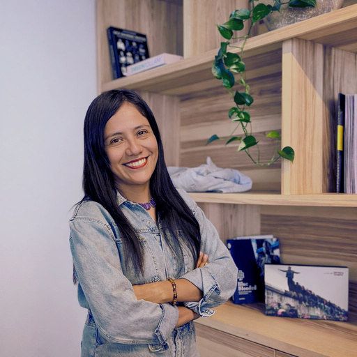

Cecilia Bautista
Arquitecta · Pintora · Ilustradora — Ciudad de México
Mi práctica artística nace del deseo de traducir emociones que no caben en palabras. Trabajo en su mayoría con acuarela, óleo y grabado, explorando la fragilidad del duelo y la belleza en lo efímero.
Me interesa que el espectador pueda reconocer algo propio en lo fragmentado, en lo que se desvanece y se transforma. Mi obra es también una herramienta vital de supervivencia, resignificando memorias y experiencias cotidianas.
En mi trayectoria cuento con exposiciones a nivel nacional en foros como la Biblioteca Pública del Estado de Jalisco Juan José Arreola, el Palacio de Minería, las casas de cultura Santa María la Rivera y La Lata, y el espacio público PRIM (Mujeres Creadoras).